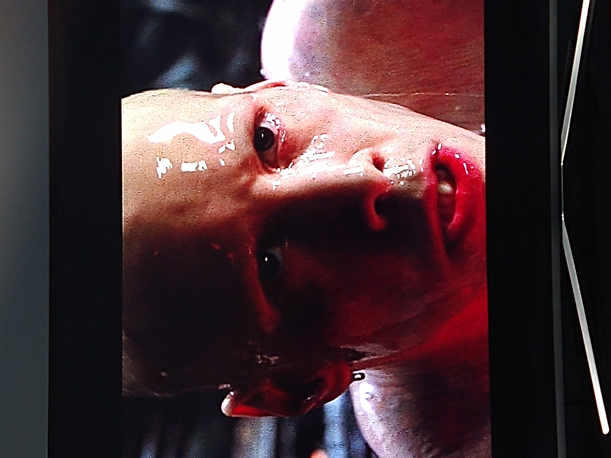
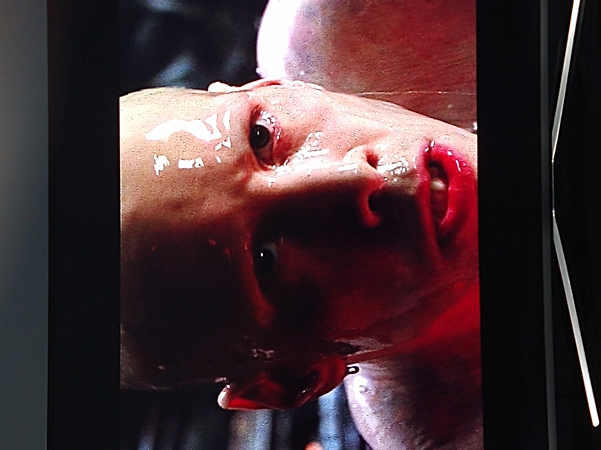
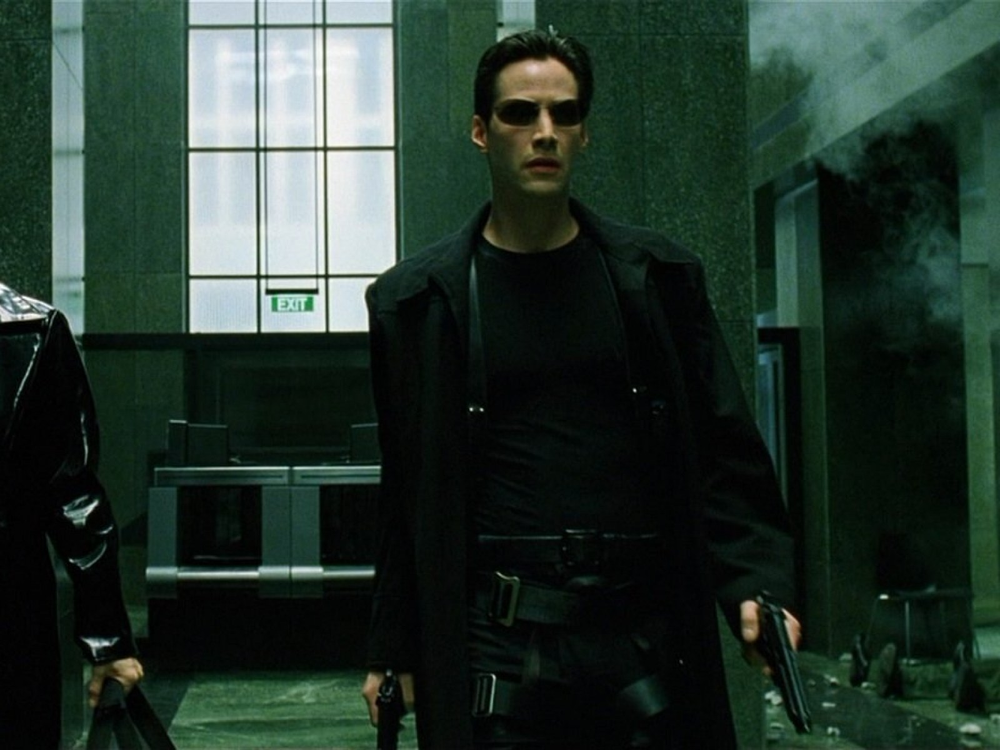
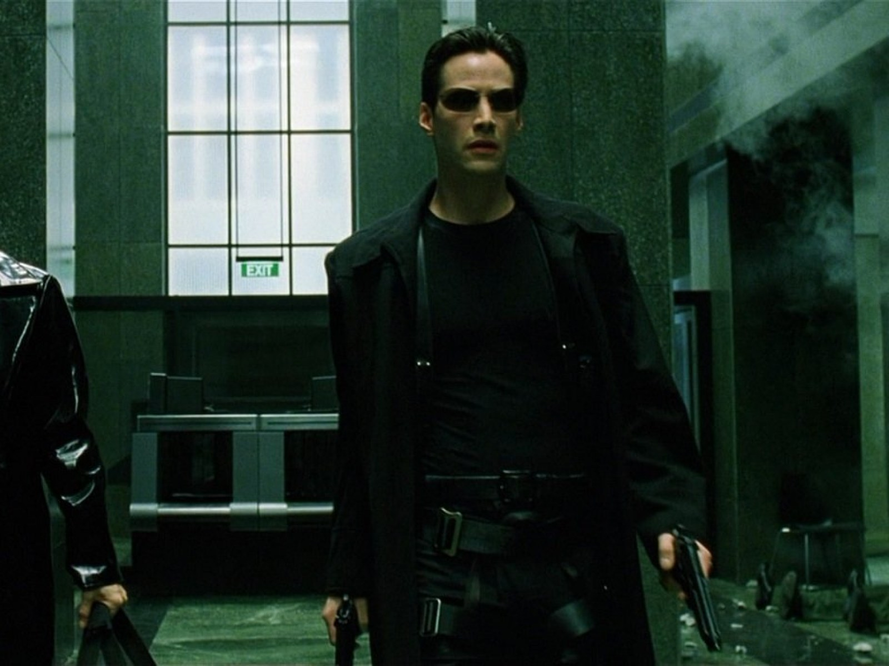
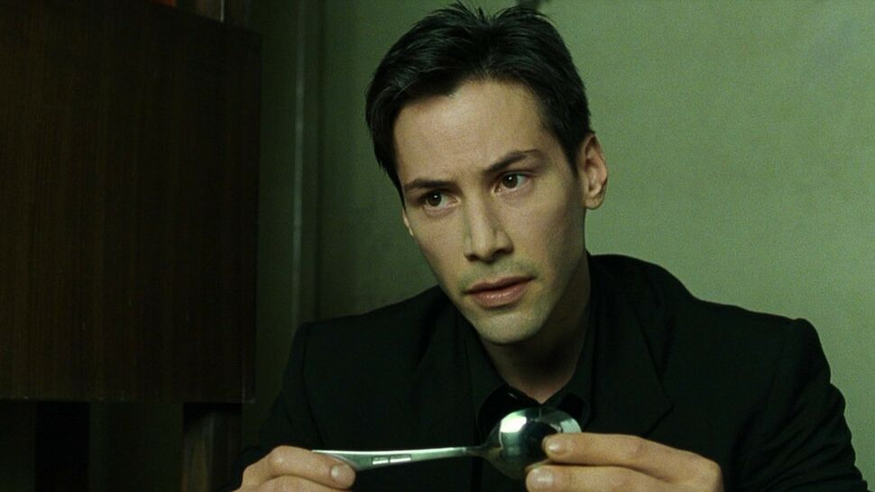
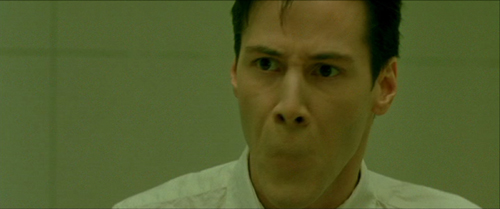
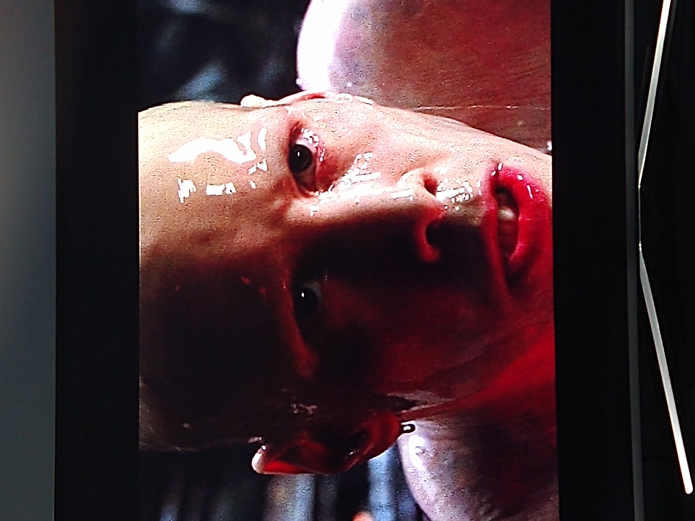
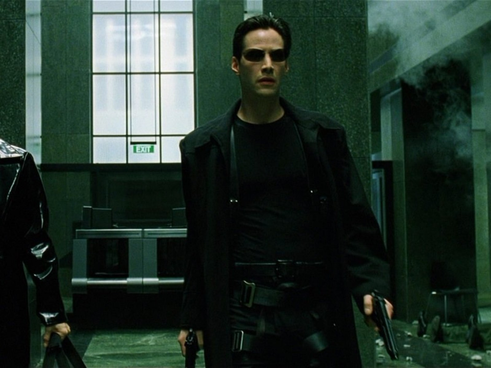
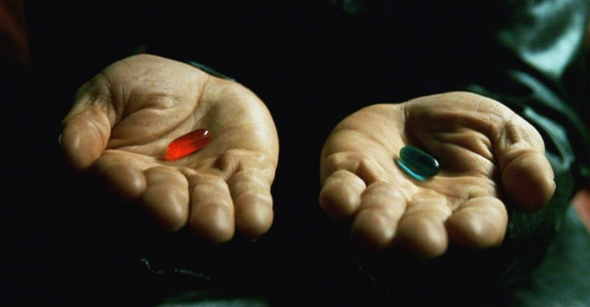
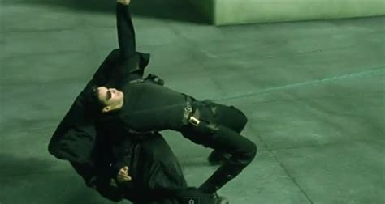

 

Firstly, the movie was amazing to begin with mainly becuase it had Keanu Reeves. I mean look at him. He's just holidng a spoon but somehow he makes the shot look like a masterpiece that i want framed and put in my room.
The matrix is able to successfully show that the character "Neo" or "Mr.Anderson" is a very human character who lives a very normal life who is suddenly thrown into the bigger plan that Morpheus knew about and the Oracle for told. When Morpheus tells him to walk across the edges of the bulding to get to the roof and escape through there, he ofcourse tries but soon gets overcome by his own fears and chooses to get caught by the agents. In other Scifi/Movies the character would've been shown as an unstoppable badass and would've done that from the get go as the viewers were expecting Neo to do in the movie but he doesn't.
Slender-Man Keanu was a very important scene overlooked by many to show the power of the agents over the matrix. They are able to bend the rules and do as they please.
While on the subject i would like to say that fans of Keanu got to see lots of different types of Keanus. There was obviously Slender-Man Keanu, Boring Suit-Tie Keanu, Slimy Keanu, Bald Keanu, Emo Keanu and Keanu is Trench Coat


Back to the topic at hand. At the start of the movies, Neo talks alot about how he doesn't believe in fate because he "doesnt like the idea that hes not in control of his life". When going to the oracle he shows the same ideologies. The matrix is the physical representation of this ideology that he is not in control of what happens there and everything there is a lie and so he chooses to fight the matrix which doesn't really make sense because he begins to believe that he is the chosen one (which according to morpheus was his fate and chosen for him). So in a sense he is fighting fate with fate.
The iconic red and blue pill scene is playing on the idea of "curiousty killed the cat". The character of Cypher was one the audience could relate to heavily if they were put into the situation yet they still support the character Neo and his ideologies. Cyphers character supports the idea that "ignorance is bliss". This is why the matrix was such a hit in my opinion because it played with the audiences phiolosophies as it made them think and challenged them to not just sit there and consume what is infront of them. The audience could see themselves doing the same as Cypher but knew that it was best if Neos and Morpheus' plan came to succession as it was for the greater good.
The movie left loads of things unexplained. For example Zion or how they knew how to operate the machinery becuase most of the people came from the matrix. One way to look at it is that Tank and his brother explained to them how to do it but that still doesnt explain the accupuncter that they were doing on Neo.
This doesn't really mean that the movie was a complete fail but just a few things that caught my attention. When the movie was trying to get across that Neo wasn't the "chosen one", I was actually getting hyped because that would mean that Neo was right about not beleiving in fate and rather did what he wanted and by simply using the basics of how to bend the matrix which was just "believing" he would be able to beat the agents and the matrix but clearly that didnt' happen. When Morpheus got caught Neo started to believe in fate because he says thay he was told that he was not chosen one but also that the choice of saving or leaving Morpheus will be presented to him and he goes with fate when he is pushed into a corner.
I don't exactly think that Trinity was shown as just a supportive character. She was practically shown as Neos side kick or rival because when they go in to the matrix they are shown as the perfect match as they protect each other. When on the roof Trinity practically saves Neos life by throwing a knife at the person standing behind him ready to kill Neo. She also does end up shooting the agent on the roof as well after Neo loses to the agent in the iconic bullet dodge scene. The difference between the two is that Neo is the "chosen one" and is simply more powerful which doesn't mean that Trinity is weak.
I didnt really understand the end. At the start I thought he was talking to Trinity and Morpheaus about how he will tell everyone in the matrix about how they can do whatever they want but then he says "that in a world without you" which made me think it was about the AI which makes more sense but Neo as a bad guy would be pretty cool aswell.
A little easter egg in John Wick 3 related to the matrix which i thought was pretty cool.